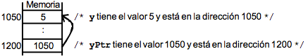
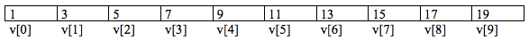

Tema 7: Punteros y memoria dinámica¶
1. Punteros¶
Ya hemos visto que la memoria del ordenador es el lugar donde se almacenan los datos y las instrucciones de un programa. Se llama memoria RAM, que es diferente a la memoria de almacenamiento como discos duros, etc. Está compuesta por un gran número de celdas (bytes) de información. A cada una de estas celdas se le asigna una dirección de memoria, que permite distinguir unas celdas de otras. De forma que, dada la dirección de memoria de una celda, se podrá obtener su valor actual y modificarlo, como ya hemos visto por ejemplo en el paso de parámetros por referencia.
Cuando se accede a una variable almacenada en memoria el compilador necesita saber:
- número de bytes que componen la variable
- dirección de memoria del byte inicial de la variable
Estos términos ya los hemos utilizado al definir una variable:
- la dirección de memoria se representa con el nombre de la variable (el compilador se encarga de sustituir el nombre por su dirección de memoria)
- El tamaño se define con el tipo de datos de la variable (
int,char...). El compilador se encarga de reservar los bytes necesarios.
Los punteros son un nuevo tipo de datos. La diferencia con el resto es que los que hemos visto hasta ahora almacenan datos y los punteros almacenan direcciones de memoria. Es decir, hacen referencia a otra zona de memoria donde se encuentran los datos. Se dice que un puntero apunta a un dato.
Características:
- Un puntero es una variable que almacena una dirección de memoria.
- Una variable contiene siempre un valor (de un tipo).
- Un puntero contiene la dirección de una variable que contiene un valor.
- El valor de un puntero es una dirección de memoria.
- Un puntero puede apuntar a una variable de cualquier tipo: tipos básicos, tipos definidos por el usuario, estructuras de datos, o incluso a funciones.
- Los punteros se pueden utilizar para referenciar y manipular estructuras de datos, y para referenciar bloques de memoria asignados dinámicamente.
Sintaxis:
1 | tipo *nombre_variable; |
- La variable declarada es un puntero al tipo de dato
especificado:
nombre_variablealmacenará la dirección de memoria en la cual se almacenará un dato de ese tipo. - Con esa declaración se reserva memoria SÓLO para el puntero, NUNCA para la variable a la que apunta.
Ejemplos:
1 2 3 | int *entero; /* entero es un puntero a int */ float *res; /* res es un puntero a float */ char *mensaje; /* mensaje es un puntero a char */ |
1.1 Operadores para el manejo de punteros¶
Existen dos operadores unarios para trabajar con punteros: * y &
*puntero: operador indirección. Devuelve el contenido de la dirección de memoria apuntado porpuntero&variable: operador dirección: Devuelve la dirección de memoria de unavariable
Ejemplo 1:
1 2 3 4 5 6 7 8 9 10 11 | int main() { int a = 0; //Declaración de variable entera de tipo entero int *p; //Declaración de variable puntero de tipo entero p = &a; //Asignación de la dirección memoria de a printf("El valor de a es: %d. \nEl valor de *p es: %d. \n",a, *p); printf("La direccion de memoria de *p es: %p\n",p); return 0; } |
Ejemplo 2:
1 2 3 4 5 6 7 8 9 | int y, *yPtr; /* yPtr es puntero a entero */ y = 5; yPtr = &y; /* yPtr toma la dirección de y */ printf("y: %d, yPtr: %p, &y: %p, &yPtr: %p, *yPtr: %d\n", y, yPtr, &y, &yPtr, *yPtr); /* Salida por pantalla: y: 5, yPtr: 0x7fff5d9829ec (1050), &y: 0x7fff5d9829ec (1050), &yPtr: 0x7fff5d9829e0 (1200), *yPtr: 5 */ |

- Una variable se refiere directamente a un valor y un puntero se refiere indirectamente a un valor.
- El puntero, al tener una dirección de memoria es como si apuntara a dicha dirección.
- Las direcciones de memoria de cada variable las asigna el sistema operativo y el programa no puede ni cambiarlas ni usar otras posiciones distintas.
Ejemplo 3:
1 2 3 4 5 6 7 8 9 10 11 12 13 14 15 16 17 18 19 20 | void main() { int x, y, *py; printf ("\n- Introduzca un número: "); scanf("%i",&y); py = &y; x = *py + 10; /* Suma 10 con el contenido de la dirección py */ printf("\n- Enteros: %d, %d y %d.", y, *py, x); printf("\n- Direcciones: %p y %p.", &y, py); return 0; } /* Salida por pantalla: - Introduzca un número: 4 - Enteros: 4, 4 y 14. - Direcciones: 0x7fff5afeb9e8 y 0x7fff5afeb9e8 */ |
Ejemplo 4:
1 2 3 4 5 6 7 8 9 10 11 | int *punteroInt; int valor = 8; punteroInt = &valor; printf("Puntero: dir: %p, valor: %d, referencia: %p\n", punteroInt, *punteroInt, &punteroInt); printf("Variable: valor: %d, referencia: %p\n", valor, &valor); /* Salida por pantalla: Puntero: dir: 0x7fff523e19e4, valor: 8, referencia:0x7fff523e19e8 Variable: valor: 8, referencia: 0x7fff523e19e4 */ |
Muchas de las funciones estándares de C trabajan con punteros, como es el caso del scanf. A scanf se le pasa la dirección de memoria del dato a leer.
1 2 | char a; scanf ("%c",&a); |
Ejemplo 5:
El siguiente programa muestra el concepto de creación, inicialización e indirección de una variable puntero:
1 2 3 4 5 6 7 8 9 10 11 12 13 | int main() { char c; char *pc; pc = &c; for(c = 'A'; c <= 'Z'; c++) printf("%c ", *pc); return 0; } //Salida: A B C D E F G H I J K L M N O P Q R S T U V W X Y Z |
Punteros a punteros
Un puntero puede apuntar a otra variable puntero. Este concepto se utiliza mucho en programas complejos en C y en la definición de estructuras de datos multidimensionales. Para declarar un puntero a un puntero se precede a la variable con dos asteriscos **. Ejemplo:
1 2 3 4 5 6 | int valor = 100; int *ptr1; int **ptr5; ptr1 = &valor; ptr5 = &ptr1; |
ptr1y ptr5son punteros. ptr1apunta a la variable valorde tipo int. ptr5contiene la dirección de ptr1.
Se pueden asignar valores a valorcon cualquiera de las siguientes sentencias:
1 2 3 | valor = 95; *ptr1 = 105; // Asigna 105 a valor **ptr5 = 99; // Asigna 99 a valor |
1.2 Punteros y arrays¶
En C los punteros y los arrays están fuertemente relacionados. Se pueden direccionar arrays como si fueran punteros y punteros como si fueran arrays.
Nombres de arrays como punteros
El nombre de un vector es en sí mismo un puntero a la primera posición del vector. Todas las operaciones que utilizan vectores e índices pueden realizarse mediante punteros.
1 | int v[10]; |

v: designa 10 posiciones consecutivas de memoria donde se pueden almacenar enteros.
Si visualizamos v[0] veremos 1. ¿Y si visualizamos *v? Como el nombre del array también es un puntero, también se verá 1. Esto significa que:
1 2 3 4 5 | v + 0 apunta a v[0] v + 1 apunta a v[1] v + 2 apunta a v[2] v + 3 apunta a v[3] ... |
Por tanto, para manejar los elementos de un array, se puede utilizar la notación de subíndices o la notación de punteros. Dado que el nombre del array contiene la dirección del primer elemento del array, se debe indireccionar el puntero para obtener el valor del elemento.
Arrays de caracteres
Podemos hacer un array de caracteres usando punteros.
1 2 | char *nombre = "Hola que tal";//Es una cadena de 13 caracteres (12 + '\0') printf("%s",nombre); |
Realmente se define como una constante de caracteres y no podemos modificarla despues de definir sus valores. Como por ejemplo no podemos reemplazar un carácter, o leer un nuevo valor.
1 2 | //Error de ejecución: strcpy(nombre, "hola"); |
Se soluciona utilizando memoria dinámica (lo veremos más adelante).
1.3 Punteros a estructuras¶
Un puntero también puede apuntar a un registro. Se puede declarar el puntero a una estructura tal y como se declara un puntero a cualquier otro tipo.
1 2 3 4 5 6 7 8 9 | typedef struct { int x; int y; }TPunto; typedef struct { TPunto *p1; TPunto *p2; }TSegmento; |
TSegmento tiene como campos dos punteros a TPunto.
Ejemplo completo, donde dos segmentos comparten el mismo punto:
1 2 3 4 5 6 7 8 9 10 11 12 13 14 15 16 17 18 19 20 21 22 23 24 25 26 27 28 29 30 31 32 | typedef struct { int x; int y; }TPunto; typedef struct { TPunto *p1; TPunto *p2; }TSegmento; void imprimeSegmento(TSegmento s); int main() { TPunto a = {2,3}; TPunto b = {10,10}; TPunto c = {5,6}; TPunto d = {9,12}; TSegmento s1, s2; s1.p1 = &a; s1.p2 = &b; s2.p1 = &b; s2.p2 = &c; imprimeSegmento(s1); imprimeSegmento(s2); // P1: [2,3] P2: [10,10] // P1: [10,10] P2: [5,6] return 0; } |
En el ejemplo anterior, los segmentos s1 y s2 comparten el punto b. Si éste cambiase, afectaría a los dos puntos, porque apuntan al mismo punto. Al referenciar al mismo punto y no ser una copia, al modificar uno de los dos, el otro se modifica.
1 2 3 4 5 6 7 8 9 10 11 12 | // Seguimos con el código anterior // Modificamos el punto compartido por ambos segmentos // Cambiamos el p2 del s1: s1.p2->x = 100; s1.p2->y = 100; imprimeSegmento(s1); imprimeSegmento(s2); // P1: [2,3] P2: [100,100] // P1: [100,100] P2: [5,6] |
Como podemos observar, cambiando p2 de s1 hace que cambie también el p1 de s2. Esto sucede porque están compartiendo una referencia al mismo punto, no son copias. Esta es la filosofía de funcionamiento en otros lenguajes, como Java, donde se utiliza el paradigma de programación orientado a objetos.
2. Gestión de memoria dinámica¶
2.1 Memoria dinámica¶
- La memoria estática es el espacio en memoria que se crea al declarar variables de cualquier tipo de dato. La memoria que estas variables ocupan no puede cambiarse durante la ejecución y tampoco puede ser liberada manualmente.
- La memoria dinámica es memoria que se reserva en tiempo de ejecución. Su principal ventaja frente a la estática, es que su tamaño puede variar durante la ejecución del programa. En C, el programador es encargado de liberar esta memoria cuando no la utilice más. El uso de memoria dinámica es necesario cuando a priori no conocemos el número de datos o elementos a tratar o cuando queremos optimizarla.
Definimos las variables dinámicas como zonas de memoria que pueden reservarse y liberarse durante el transcurso del programa. La única forma de acceder a su contenido es mediante una variable puntero que almacene la dirección de memoria correspondiente. Las variables dinámicas se guardan en la zona de memoria dinámica y se gestionan con las funciones de memoria dinámica (malloc, calloc, realloc,free`).
2.2 Funciones para gestionar la memoria dinámica¶
La biblioteca estándar de C proporciona las funciones malloc, calloc, realloc y free para el manejo de memoria dinámica. Estas funciones están definidas la librería stdlib.h.
malloc
La función malloc reserva un bloque de memoria y devuelve un puntero al inicio de la misma.
Sintaxis:
1 | void *malloc(size_t size); |
donde el parámetro size especifica el número de bytes a reservar. En caso de que no se pueda realizar la asignación, devuelve el valor nulo (definido en la macro NULL ), lo que permite saber si hubo errores en la asignación de memoria.
1 2 3 4 5 6 7 8 9 10 11 12 13 14 15 16 17 18 | #include <stdlib.h> int main() { int *vect1, n; printf("Número de elementos del vector: "); scanf("%d", &n); /* reservamos memoria para almacenar n enteros */ vect1 = (int *) malloc(n * sizeof(int)); /* Verificamos que la asignación se haya realizado correctamente */ if (vect1 == NULL) { /* Error al intentar reservar memoria */ } return 0; } |
El operador sizeof(tipo) nos devuelve el número de bytes que ocupa el tipo de dato pasado como parámetro.
Uno de los usos más comunes de la memoria dinámica es la creación de vectores/matrices cuyo número de elementos se define en tiempo de ejecución.
calloc
La función calloc funciona de modo similar a malloc, pero además de reservar memoria, inicializa a 0 la memoria reservada.
Sintaxis:
1 | void* calloc(size_t num, size_t size); |
Devuelve un puntero a una zona de memoria en la que se reservan num elementos de size bytes. La memoria se inicializa a 0.
1 2 3 4 5 6 7 8 9 10 11 12 13 14 15 16 | #include <stdlib.h> #define TAM = 25 int main() { float *vectorFloat; vectorFloat = (float *)calloc(TAM, sizeof(float)); /* Verificamos que la asignación se haya realizado correctamente */ if (vectorFloat == NULL) { /* Error al intentar reservar memoria */ ... } return 0; } |
realloc
La función realloc redimensiona el espacio asignado de forma dinámica anteriormente a un puntero.
Sintaxis:
1 | void* realloc(void *ptr, size_t size); |
Donde ptr es el puntero a redimensionar, y size el nuevo tamaño, en bytes, que tendrá. Si el puntero que se le pasa tiene el valor NULL, esta función actúa como malloc. Si la reasignación no se pudo hacer con éxito, devuelve un puntero nulo.
1 2 3 4 5 6 7 8 9 10 11 | #include <stdlib.h> #define TAM = 20 int main() { float *vectorFloat; vectorFloat = (float *)malloc(sizeof(float) * TAM); vectorFloat = (float *)realloc(vectorFloat, sizeof(float)*50); return 0; } |
1 2 3 4 5 6 7 | int main() { float *vectorFloat; vectorFloat = NULL; vectorFloat = (float *)realloc(vectorFloat, sizeof(float)*50); return 0; } |
Cuando se redimensiona la memoria con realloc, si el nuevo tamaño es mayor que el anterior, se conservan todos los valores originales, quedando los bytes restantes sin inicializar. Si el nuevo tamaño es menor, se conservan los valores de los primeros size bytes. Los restantes también se dejan intactos, pero no son parte del bloque que devuelve la función.
free
La función free sirve para liberar memoria que se asignó dinámicamente. Requiere como parámetro la dirección de memoria inicial de una zona de memoria reservada en la memoria dinámica (tal cual se reservó con malloc o realloc). La función freese encarga de marcar como libre esta memoria. Si el puntero es nulo, free no hace nada.
Además existe la función cfree, que sirve para liberar memoria de los elementos que han sido reservados con calloc.
Sintaxis:
1 2 | void free(void *ptr); void cfree (void *ptr); |
- Libera la memoria reservada para el puntero
ptr - No se ejecuta automáticamente cuando se acaba el ámbito en el que se definió el puntero
- Las llamadas a
freehan de ser explícitas
NULL
NULLhace referencia a una dirección de memoria nula, no válida- Lo utilizamos cuando queremos indicar que un puntero no tiene memoria reservada o la que tenía ya ha sido liberada por medio de una llamada a
free() NULLes también el valor devuelto por funciones que han de devolver un puntero cuando no pueden realizar su labor.[m|c|re]allocdevuelvenNULLcuando no hay memoria disponible
1 2 3 4 5 6 7 8 9 10 11 12 13 | #include <stdlib.h> #define TAM = 20 int main() { float *vectorFloat; vectorFloat = (float *)malloc(sizeof(float) * TAM); ... free(vectorFloat); vectorFloat = NULL; return 0; } |
2.3 Arrays dinámicos multidimensionales¶
Para definir un array multidimensional de manera dinámica utilizaremos punteros a punteros. En este caso vamos a definir una matriz de dos dimensiones:
1 | int **tabla2D; // un puntero por cada dimensión |
Se interpreta como un puntero a un tipo que es un puntero a un entero.
1 2 3 4 5 6 7 8 9 10 11 12 13 14 15 16 17 18 19 20 21 22 23 24 25 26 27 28 29 30 31 32 33 34 35 36 37 38 39 40 41 42 43 44 | #include<stdlib.h> #define X 5 #define Y 7 void rellenarTabla2D(int **); int main() { int **tabla2D; int dim1, dim2; // Reservamos la memoria tabla2D = (int**)malloc(sizeof(int*) * X); for(dim1 = 0; dim1 < X; dim1++){ tabla2D[dim1] = (int*)malloc(sizeof(int) * Y); for(dim2 = 0; dim2 < Y; dim2++){ tabla2D[dim1][dim2] = 0; } } // Rellenamos sus valores en una función rellenarTabla2D(tabla2D); printf("%d\n", tabla2D[2][3]); // comprobamos una posición al azar //Liberamos la memoria de la tabla3D for(dim1 = 0; dim1 < X; dim1++) free(tabla2D[dim1]); free(tabla2D); tabla2D = NULL; return 0; } void rellenarTabla2D(int **tabla) { int x, y; for(x = 0; x < X; x++){ for(y = 0; y < Y; y++){ tabla[x][y] = 100; } } } |
3. Punteros y funciones¶
Uno de los usos de los punteros es el paso de parámetros por referencia a una función. Recordemos que los parámetros de una función se pueden pasar por valor o por referencia.
En C todos los parámetros de las funciones se pasan por valor. Para simular un paso de parámetro por referencia en C, lo que se hace es pasar un puntero al objeto que se pasa. Así, la función tiene acceso no sólo al valor del parámetro sino también a su situación en memoria, lo que permite su modificación.
Ya vimos que para que un parámetro de una función pueda ser modificado, ha de pasarse por referencia, y en C eso sólo es posible pasando la dirección de la variable en lugar de la propia variable. Si se pasa la dirección de una variable, la función puede modificar el contenido de esa posición (no así la propia dirección, que es una copia)
Arrays y matrices como parámetro¶
Paso de parámetros por valor
1 2 3 4 5 6 7 8 9 10 11 12 13 14 15 16 17 18 | void funcion(char *cad) { printf("Función. Valor: %s, Dirección: %p, Referencia: %p\n", cad, cad, &cad); } int main() { // Definimos una cadena de caracteres constante char *cadena = {"Hola mundo"}; printf("Main. Valor: %s, Dirección: %p, Referencia: %p\n", cadena, cadena, &cadena); funcion(cadena); return 0; } /* Salida por pantalla: Main. Valor: Hola mundo, Dirección: 0x1046e0f77, Referencia: 0x7fff5b51f9e8 Función. Valor: Hola mundo, Dirección: 0x1046e0f77, Referencia: 0x7fff5b51f9c8 */ |
Como vemos, en funcion hay una referencia a los elementos del array pero no al puntero en sí, que es una copia. Es decir, no podríamos modificar dinámicamente su memoria porque no tenemos una referencia a la misma.
Paso de parámetros por referencia¶
1 2 3 4 5 6 7 8 9 10 11 12 13 14 15 16 17 | void funcionRef(char **cad) { printf("Función. Valor: %s, Dirección: %p, Referencia: %p\n", *cad, *cad, cad); } int main() { char *cadena = {"Hola mundo"}; printf("Main. Valor: %s, Dirección: %p, Referencia: %p\n", cadena, cadena, &cadena); funcionRef(&cadena); return 0; } /* Salida por pantalla: Main. Valor: Hola mundo, Dirección: 0x10861af77, Referencia: 0x7fff575e59e8 Función. Valor: Hola mundo, Dirección: 0x10861af77, Referencia: 0x7fff575e59e8 */ |
Ahora tenemos referencia a los datos y al propio puntero con lo que podemos modificar la memoria que tiene reservada.
Ejemplo con vector:
1 2 3 4 5 6 7 8 9 10 11 12 13 14 15 16 17 18 19 20 21 22 23 | #define TAM 20 void creaVector(int **); int main() { int *vector; // Reservamos la memoria creaVector(&vector); vector[0] = 1; //Rellenamos al azar vector[2] = 2; printf("Pos 2: %d\n", vector[2]); //Comprobamos // Liberamos memoria free(vector); vector = NULL; return 0; } void creaVector(int **v) { *v = (int*)malloc(sizeof(int) * TAM); } |
Ejemplo con typedef:
1 2 3 4 5 6 7 8 9 10 11 12 13 14 15 16 17 18 19 20 21 22 23 24 25 26 27 28 29 30 31 32 33 34 | #define TAM 20 typedef int* TVector; void creaVector(TVector*); void ampliaVector(TVector*, int); int main() { TVector vector; // Reservamos la memoria creaVector(&vector); vector[0] = 1; //Rellenamos al azar vector[2] = 2; printf("Pos 2: %d\n", vector[2]); //Comprobamos ampliaVector(&vector, 50); // Liberamos memoria free(vector); vector = NULL; return 0; } void creaVector(TVector* v) { *v = (int*)malloc(sizeof(int) * TAM); // Equivalente: // *v = (TVector)malloc(sizeof(int) * TAM); } void ampliaVector(TVector* v, int tam) { *v = (int*)realloc(*v, sizeof(int)*tam); // Equivalente: // *v = (TVector)realloc(*v, sizeof(int)*tam); } |
Devolución de punteros¶
Una función también puede devolver un tipo de datos puntero. La función se declara así:
1 | <tipo*> funcion(<argumentos>); |
Este tipo de funciones se suelen usar para reservar memoria o crear elementos en estructuras dinámicas de datos. En el ejemplo anterior, la reserva de memoria dinámica del vector también podría hacerse así:
1 2 3 4 5 6 | int* creaVector() { int *v; v = (int*)malloc(sizeof(int) * TAM); return v; } |
Ejercicio: Dado un TPunto, define una estructura que contenga un array dinámico de puntos y la cantidad de puntos que contiene. Sólo se debe reservar la memoria necesaria.
1 2 3 4 5 6 7 8 9 10 11 12 13 14 15 16 17 18 19 20 21 22 23 24 25 26 27 28 29 30 31 32 33 34 35 36 37 38 39 40 41 42 43 44 45 46 47 48 49 50 51 52 | typedef struct { int x; int y; }TPunto; typedef struct { int num; TPunto *puntos; } TPuntos; TPuntos rellenaLista(); int main() { TPuntos puntos; puntos = rellenaLista(); //Función para imprimir los puntos free(puntos.puntos); return 0; } TPuntos rellenaLista() { TPuntos lista; bool fin; int x, y, n; fin = false; n = 0; lista.puntos = NULL; lista.num = 0; printf("Introduce puntos hasta introducir -1 -1\n"); while(!fin) { scanf("%d %d", &x , &y); if(x != -1 && y != -1) { lista.puntos = (TPunto *) realloc(lista.puntos, sizeof(TPunto) * (n+1)); lista.puntos[n].x = x; lista.puntos[n].y = y; n++; } else fin = true; } lista.num = n; return lista; } |
En el siguiente ejemplo modificamos la función rellenaLista y le pasamos por parámetro por referencia TPuntos lista. ¿Qué sucede si quitamos los paréntesis de (*lista)?
1 2 3 4 5 6 7 8 9 10 11 12 13 14 15 16 17 18 19 20 21 22 23 24 | void rellenaLista(TPuntos *lista) { bool fin; int x, y, n; fin = false; n = 0; (*lista).puntos = NULL; (*lista).num = 0; printf("Introduce puntos hasta introducir -1 -1\n"); while(!fin) { scanf("%d %d", &x , &y); if(x != -1 && y != -1) { (*lista).puntos = (TPunto *) realloc((*lista).puntos, sizeof(TPunto) * (n+1)); (*lista).puntos[n].x = x; (*lista).puntos[n].y = y; n++; } else fin = true; } (*lista).num = n; } |
4. Array estático de punteros¶
Si se necesita reservar muchos punteros o gestionar de forma más eficiente la memoria, se puede declarar un array de punteros. Un array de punteros es un array cuyos elementos son punteros. Ejemplo:
1 | int* a[10]; // Array de 10 punteros a enteros |
Cada elemento contiene una dirección que apunta a otras posiciones de memoria. Cada valor apuntado en este caso debe ser un entero.. Ejemplo:
1 2 | a[5] = &edad; // a[5] apunta a la dirección de edad a[4] = NULL; // a[4] no contiene dirección |
Podemos crear arrays de punteros a cualquier tipo: arrays de punteros a cadenas, a registros, etc.
Ejemplo de array de punteros a registro
Siguiendo con el ejemplo de los puntos y los segmentos, vamos definir un array de punteros a segmento:
1 2 3 4 5 | TSegmento* segmentos[100]; TSegmento s1, s2; segmentos[0] = &s1; segmentos[1] = &s2; |
5. Array dinámico de registros¶
Vamos a definir un array dinámico de TSegmento:
1 2 3 4 5 6 7 | TSegmento *s; // Reservando una zona de memoria dinámica: s = (TSegmento*)malloc(sizeof(TSegmento)); segmentos[0] = s; ... // Después de su uso hay que liberar la memoria: free(s); |
También podemos reservar la memoria dinámica dentro de una función:
1 2 3 4 5 6 7 8 9 10 11 12 13 14 15 16 17 18 19 20 21 22 23 24 25 26 27 28 29 30 31 32 33 34 35 36 37 38 39 40 41 42 43 44 45 | //Funciones para reservar memoria de dos formas diferentes: TSegmento* creaSegmento(); void creaPunto(TPunto**); // Pasamos por referencia el puntero a TPunto int main() { TSegmento *s = NULL; TPunto *p1 = NULL; TPunto *p2 = NULL; // Reservar memoria s = creaSegmento(); creaPunto(&p1); creaPunto(&p2); // Resto del código s->p1 = p1; s->p2 = p2; p1->x = 4; // Modificamos los puntos p1->y = 5; // Por tanto, se modifica el segmento p2->x = 6; // Porque apuntan al mismo "objeto" p2->y = 7; imprimeSegmento(*s); // Liberar memoria free(p1); free(p2); free(s); s = NULL; p1 = NULL; p2 = NULL; return 0; } TSegmento* creaSegmento() { TSegmento *s; s = (TSegmento *) malloc(sizeof(TSegmento)); return s; } void creaPunto(TPunto **p) { *p = (TPunto*) malloc(sizeof(TPunto)); } |
Ejercicios resueltos¶
Ejercicio 1: Array dinámico de registros¶
Escribe un programa que guarde información de vehículos. De cada vehículo interesa almacenar la matrícula, la marca, el propietario y el precio. Del propietario guardaremos sus datos personales: nombre, dirección, teléfono y nif. Se almacenarán en un array dinámico que irá aumentando conforme se vayan añadiendo coches. Después responde a las siguientes preguntas:
- ¿Qué sucede si no inicializamos el array a NULL?
- Si hacemos el
reallocen elmain, ¿qué habría que cambiar? ¿Por qué? - Prueba a no pasar el vector por referencia a nuevoCoche. Qué sucede?
1 2 3 4 5 6 7 8 9 10 11 12 13 14 15 16 17 18 19 20 21 22 23 24 25 26 27 28 29 30 31 32 33 34 35 36 37 38 39 40 41 42 43 44 45 46 47 48 49 50 51 52 53 54 55 56 57 58 59 60 61 62 63 64 65 66 67 68 69 70 71 72 73 74 | #define TAMCAD 15 typedef struct { char nombre[TAMCAD]; char nif[TAMCAD]; }TPersona; typedef struct { char matricula[TAMCAD]; char marca[TAMCAD]; float precio; TPersona propietario; }TFichaCoche; typedef TFichaCoche *TCoches; // Array dinámico de tipo TFichaCoche void nuevoCoche(TCoches*, int*); void muestraCoches(TCoches, int); int main() { TCoches coches; // Array dinámico que va aumentando conforme se añaden coches int numCoches = 0, i; coches = NULL; //Necesario si no inicializamos el puntero con malloc // Probamos: añadimos 3 coches for(i = 0; i < 3; i++) { nuevoCoche(&coches, &numCoches); } // Los mostramos muestraCoches(coches, numCoches); // Liberamos memoria free(coches); return 0; } void nuevoCoche(TCoches *coches, int *numCoches) { int num; *coches = (TFichaCoche *)realloc(*coches, sizeof(TFichaCoche)*(num+1)); num = *numCoches; printf("**** Coche %d ****\n", num); printf("Introduce matrícula: "); scanf("%s",(*coches)[num].matricula); printf("Introduce marca: "); scanf("\n%[^\n]s",(*coches)[num].marca); printf("Introduce precio: "); scanf("%f", &(*coches)[num].precio); // propietario printf("Nombre propietario: "); scanf("\n%[^\n]s",(*coches)[num].propietario.nombre); printf("NIF propietario: "); scanf("\n%s", (*coches)[num].propietario.nif); (*numCoches)++; } void muestraCoches(TCoches coches, int num) { int i; for (i = 0; i < num; i++) { printf("***********************\n"); printf("Matrícula: %s\n", coches[i].matricula); printf("Marca: %s\n", coches[i].marca); printf("Precio: %f\n", coches[i].precio); printf("Propietario: %s con nif: %s\n", coches[i].propietario.nombre, coches[i].propietario.nif); printf("***********************\n"); } } |
Ejercicio 2: Tabla 3D definida con typedef¶
Como hemos visto en temas anteriores, definir tipos propios con typedefresulta muy útil.
Veamos el ejemplo de un array multidimensional de 3 dimensiones tabla3D usando typedef:
1 2 3 4 5 6 7 8 9 10 11 12 13 14 15 16 17 18 19 20 21 22 23 24 25 26 27 28 29 30 31 32 33 34 35 36 37 38 39 40 41 42 43 44 45 46 47 48 49 50 51 52 53 54 55 56 57 58 59 60 61 62 63 64 65 66 67 68 69 70 | #define X 5 #define Y 7 #define Z 20 typedef int*** TTabla3D; TTabla3D crearTabla3D(); void freeTabla3D(TTabla3D); void rellenarTabla3D(TTabla3D); int main() { TTabla3D tabla3D; tabla3D = crearTabla3D(); if(tabla3D) { // Comprobamos que malloc no haya devuelto NULL rellenarTabla3D(tabla3D); printf("%d\n", tabla3D[2][3][1]); // comprobamos una posición al azar freeTabla3D(tabla3D); tabla3D = NULL; // Si queremos poner tabla3D = NULL dentro de la función // freeTabla3D, tenemos que pasar el puntero tabla3D por // referencia para poder modificarlo } return 0; } TTabla3D crearTabla3D() { TTabla3D tabla3D; //será de 5x7x20 int dim1, dim2, dim3; tabla3D = (int***)malloc(sizeof(int**) * X); for(dim1 = 0; dim1 < X; dim1++){ tabla3D[dim1] = (int**)malloc(sizeof(int*) * Y); for(dim2 = 0; dim2 < Y; dim2++){ tabla3D[dim1][dim2] = (int*)malloc(sizeof(int) * Z); for(dim3 = 0; dim3 < Z; dim3++){ tabla3D[dim1][dim2][dim3] = 0; /*inicialización*/ } } } return tabla3D; } void freeTabla3D(TTabla3D tabla) { int dim1, dim2, dim3; for(dim1 = 0; dim1 < X; dim1++){ for(dim2 = 0; dim2 < Y; dim2++){ free(tabla[dim1][dim2]); } free(tabla[dim1]); } free(tabla); } void rellenarTabla3D(TTabla3D tabla) { int dim1, dim2, dim3; for(dim1 = 0; dim1 < X; dim1++){ for(dim2 = 0; dim2 < Y; dim2++){ for(dim3 = 0; dim3 < Z; dim3++){ tabla[dim1][dim2][dim3] = 100; } } } } |
La función crearTabla3D también se puede hacer pasando la tabla3D por referencia para poder reservar la memoria dinámicamente:
1 2 3 4 5 6 7 8 9 10 11 12 13 14 15 16 17 18 19 20 21 22 23 24 | void crear2Tabla3D(TTabla3D*); ... int main() { ... crear2Tabla3D(&tabla3D); ... } void crear2Tabla3D(TTabla3D *tabla3D) { int dim1, dim2, dim3; *tabla3D = (int***)malloc(sizeof(int**) * X); for(dim1 = 0; dim1 < X; dim1++){ (*tabla3D)[dim1] = (int**)malloc(sizeof(int*) * Y); for(dim2 = 0; dim2 < Y; dim2++){ (*tabla3D)[dim1][dim2] = (int*)malloc(sizeof(int) * Z); for(dim3 = 0; dim3 < Z; dim3++){ (*tabla3D)[dim1][dim2][dim3] = 0; /*inicialización*/ } } } } |
Bibliografía¶
- Capítulos 12.1 a 12.4 y 13.1 a 13.8 de "Programación en C, metodología, algoritmos y estructuras de datos", Luis Joyanes, Ignacio Zahonero
Programación 1, Grado de Robótica, curso 2019-20
© Departamento Ciencia de la Computación e Inteligencia Artificial, Universidad de Alicante
Cristina Pomares Puig